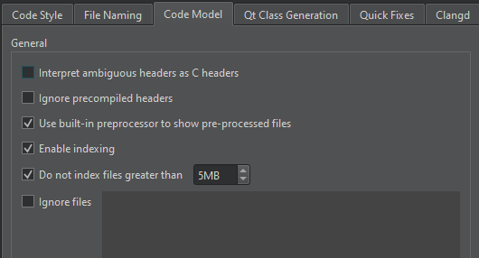

Code Model
The code model offers services such as code completion, syntactic and semantic highlighting, and diagnostics.
To configure the C++ code model globally, go to Preferences > C++ > Code Model.

The following table summarizes the preferences.
| Setting | Value |
|---|---|
| Interpret ambiguous headers as C headers | Instructs the code model to interpret ambiguous header files as C language files. Select this checkbox if you develop mainly using C. |
| Ignore precompiled headers | Clear this checkbox to process precompiled headers. |
| Use built-in preprocessor to show pre-processed files | Uses the built-in preprocessor to show the pre-processed source file in the editor. |
| Enable indexing | Turns on the built-in indexer. Clearing this checkbox severely limits the capabilities of the code model. |
| Do not index files greater than | To avoid out-of-memory crashes caused by indexing huge source files that are typically auto-generated by scripts or code, the size of files to index is limited to 5MB by default. To index all files, clear the checkbox. |
| Ignore files | To ignore files that match wildcard patterns, enter each wildcard pattern on a separate line in the field. |
Inspect preprocessed C++ code
To analyze the causes of compile errors or errors caused by wrong includes pulled in by dependencies or C++ macros expanding to something unexpected, select Show Preprocessed Source in the editor context menu.
This action expands all C++ macros to their actual code and removes code that is guarded by a currently inactive #ifdef statements.
If you clear Use built-in preprocessor to show pre-processed files, this action also expands all "#include <foo.h>" statements to their actual contents.
See also Configure C++ code model, Specify clangd settings, Clang Code Model, and Clangd.